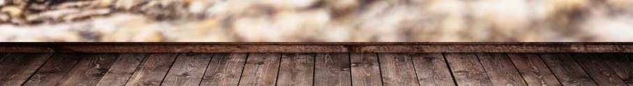

3 March 2026
Paper: X-L Qi, D. Ranard: Emergent classicality in general multipartite states and channels link
By Tibor Rakovszky
10 March 2026
Paper: F. Bibak, C. Cepollaro, N. M. Sánchez, B. Dakic, C. Brukner: The classical limit of quantum mechanics through coarse-grained measurements link
By Fatemeh Bibak
17 March 2026
Paper: R. Blume-Kohout, H. Ng, D. Poulin, L. Viola: Information-preserving structures: A general framework for quantum zero-error information link
By Domonkos Svastits
24 March 2026
Paper: B. Ferté, X. Cao: Solvable model of quantum Darwinism-encoding transitions link
By Daniel Varjas
31 March 2026
Paper: T. Jacobson: Thermodynamics of Spacetime: The Einstein Equation of State link
By Márton Kormos
14 April 2026
Paper: T. Jacobson: Entanglement Equilibrium and the Einstein Equation link
By Riccarda Bonsignori
19 May 2026
Paper: CJ. Riedel: Classical Branch Structure from Spatial Redundancy in a Many-Body Wave Function link
By Jess Riedel (online)
26 May 2026
Paper: C-J. Cao, S. M. Carroll, S. Michalakis: Space from Hilbert Space: Recovering geometry from bulk entanglement link
Paper: G. Franzmann, S. Jovancic, M. Lawson: Relative distance of entangled systems in emergent spacetime scenarios link
By Guilherme Franzmann (online)
2 June 2026
Paper: C-J. Cao: From Quantum Codes to Gravity: A Journey of Gravitizing Quantum Mechanics link
By Chun-Jun Cao (online)
TBD 2026
Title: Approximate Quantum Error Correction
Paper: C. Bény, O. Oreshkov: General Conditions for Approximate Quantum Error Correction and Near-Optimal Recovery Channels link
By János Asbóth
TBD 2026
Title: Gravitationally Induced Entanglement
Paper: A. Di Biagio: The simple reason why classical gravity can entangle link
By Andrea Di Biagio
10 February 2026
Paper: A. Di Biagio, C. Rovelli: Relative information, relative facts link
By Andrea Di Biagio (online)
17 February 2026
Paper: J. Cotler, G. Penington, D. Ranard: Locality from the spectrum link
By Daniel Ranard (online)
24 February 2026
Title: On the emergence of preferred structures in quantum theory
Abstract: The ability to uniquely select a theory in virtue of a physically
motivated principle has proved to be a fruitful and satisfactory
approach in theoretical physics. Einstein’s tensor is the only tensor at
most second order in the metric that can consistently be equated to the
stress-energy tensor; the quantum fields are the only possible fields of
operators that transform correctly under the Poincaré group;
Schrödinger’s equation is the only possible Markovian unitary time
evolution in a Hilbert space; more recently, the fermionic and bosonic
statistics have also been singled out from other more exotic statistics.
What does it mean, though, for a structure to be uniquely constrained by
a property?
As a case of study, this talk first focus on the specific question of
whether a Hamiltonian can uniquely determine a tensor product structure
(TPS) of the Hilbert space—grounding the quantum mechanical notions of
subsystems and locality—a crucial challenge in the growing field of
quantum mereology. We review, clarify, and critically examine two
apparently conflicting theorems by Cotler et al. and Stoica. After
resolving the tension, we then broaden the discussion and propose a
correct mathematical way to address the general problem of preferred
structures in quantum theory, relative to the characterization of
emergent objects by unitary-invariant properties. We finally apply this
formalism to the case of the TPS, and show that a Hamiltonian and a
state is enough structure to uniquely select a preferred TPS.
Paper: A. Soulas, G. Franzmann, A. Di Biagio: On the emergence of preferred structures
in quantum theory link
By Antoine Soulas
Add new papers here
A. Kitaev: Almost-idempotent quantum channels and approximate C*-algebras link
X. Jiang, A. Hochrainer, J. Kysela, M. Erhard, X. Gu, Y. Yu, A. Zeilinger: Subjective nature of path information in quantum mechanics link
D. Schmid, Y. Ying, M. Leifer: Coppenhagenish interpretations of quantum mechanics link
L. Catani, M. Leifer, D. Schmid, R. W. Spekkens: Why interference pheonomena do not capture the essense of quantum theory link
S. Carroll, A. Singh: Quantum mereology: Factorizing Hilbert space into subsystems with quasiclassical dynamics link
B. Cakmak, Ö. Müstecaplioglu, M. Paternostro, B. Vacchini, S. Cambell: Quantum Darwinism in a Composite System: Objectivity versus Classicality link
C. Overstreet, P. Asenbaum, J. Curti, M. Kim, M. Kasevich: Observation of a gravitational Aharonov-Bohm effect link
F. Brandao, M. Piani, P. Horodecki: Generic emergence of classical features in quantum Darwinism link
H. Ollivier: Emergence of Objectivity for Quantum Many-Body Systems link
L.Hausmann, R. Renner: Against probability: A quantum state is more than a list of probability distributions link